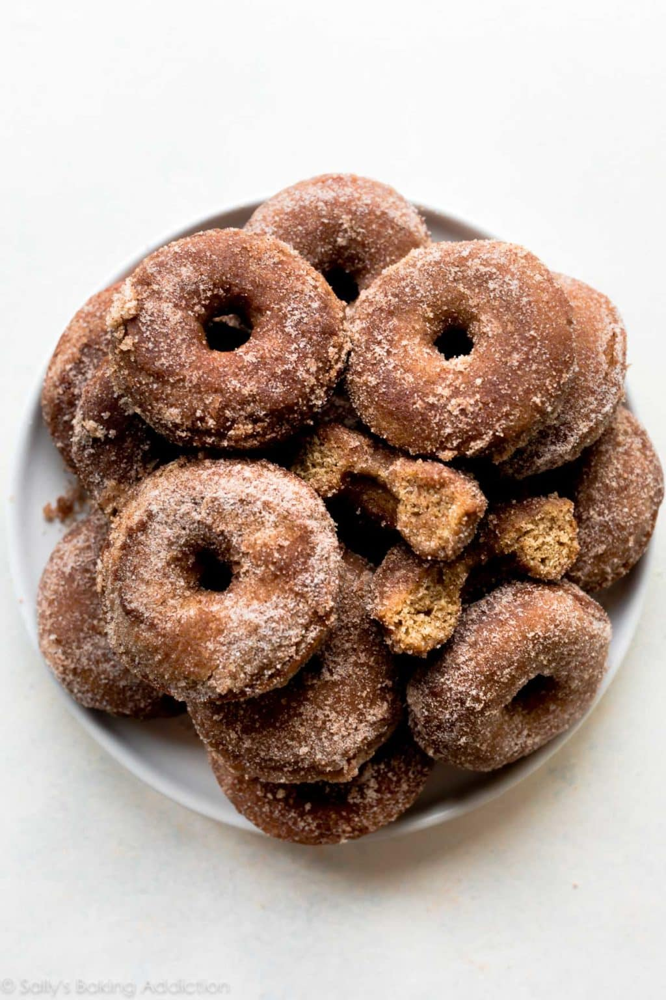

Groks Apple Cider Donuts

Ingredients
- 1 and 1/2 cups (360ml) apple cider
- 2 cups (250g) all-purpose flour (spooned & leveled)*
- 1 teaspoon baking soda
- 3/4 teaspoon baking powder
- 1 teaspoon ground cinnamon
- 1 teaspoon apple pie spice*
- 1/4 teaspoon salt
- 2 Tablespoons (28g) unsalted butter, melted
- 1 large egg, at room temperature
- 1/2 cup (100g) packed light or dark brown sugar
- 1/2 cup (100g) granulated sugar
- 1/2 cup (120ml) milk, at room temperature*
- 1 teaspoon pure vanilla extract
Toppings
- 1 cup (200g) granulated sugar
- 3/4 teaspoon ground cinnamon
- 3/4 teaspoon apple pie spice*
- 6 Tablespoons (85g) unsalted butter, melted
Instrcutions
Step 1: Reduce The Apple Cider: 6 Tablespoons (85g) unsalted butter, melted
Step 2: Preheat oven to 350°F (177°C). Spray donut pan with non-stick spray. Set aside.
Step 3: Make the Donuts: Whisk the flour, baking soda, baking powder, cinnamon, apple pie spice, and salt together in a large bowl. Set aside.
Step 4: Whisk the melted butter, egg, brown sugar, granulated sugar, milk, and vanilla extract together. Pour into the dry ingredients, add the reduced apple cider, and whisk everything together until smooth and combined. Batter will be slightly thick.
Step 5: Scoop the Batter into the Donut Pan; for ease, I highly recommend using a large zipped-top bag. Cut a corner off the bottom of the bag and pipe the batter into each donut cup, filling about halfway.
Step 6: Bake for 10-11 minutes or until the edges and tops are lightly browned. To test, poke your finger into the top of the donut. If the donut bounces back, they’re done. Cool donuts for 2 minutes then transfer to a wire rack. Re-grease the pan and bake the remaining donut batter.
Step 7: Coat the Donuts: Combine the granulated sugar, cinnamon, and apple pie spice together in a medium bowl. Once cool enough to handle, dunk both sides of each donut in the melted butter, then generously in the apple spice topping.
Step 8: Enjoy! Donuts are best served immediately. Leftovers keep well covered tightly at room temperature for up to 2 days or in the refrigerator for up to 5 days.